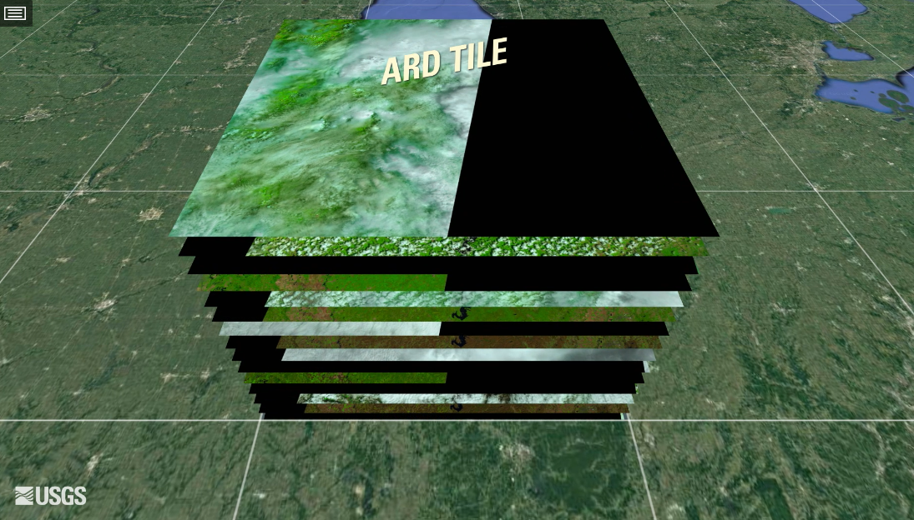
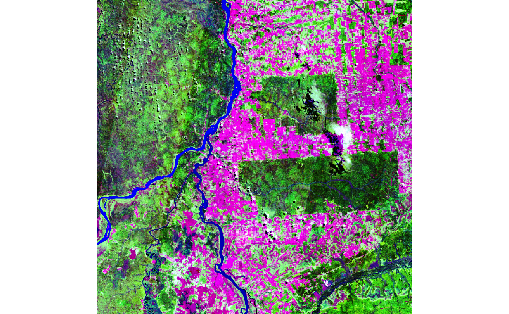
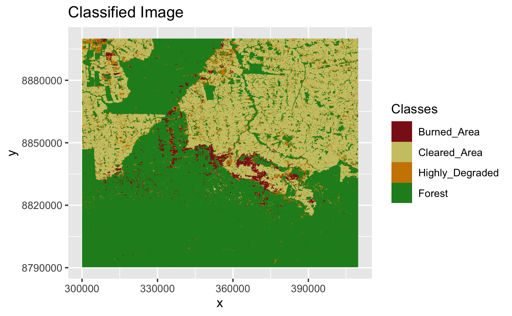
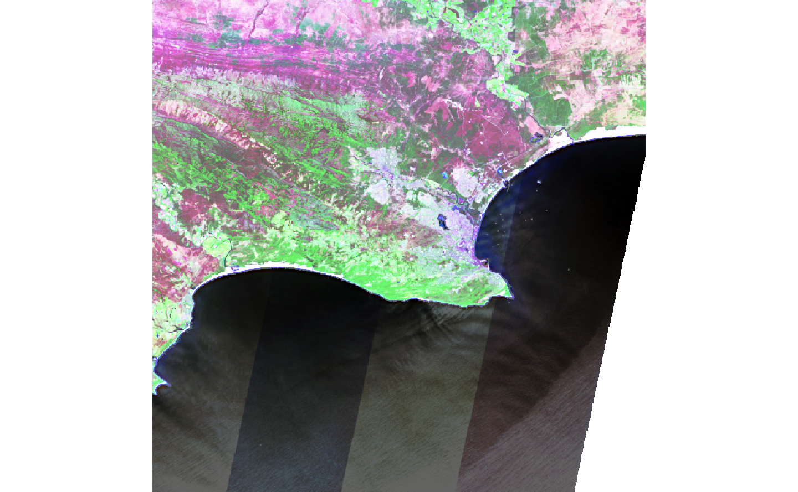
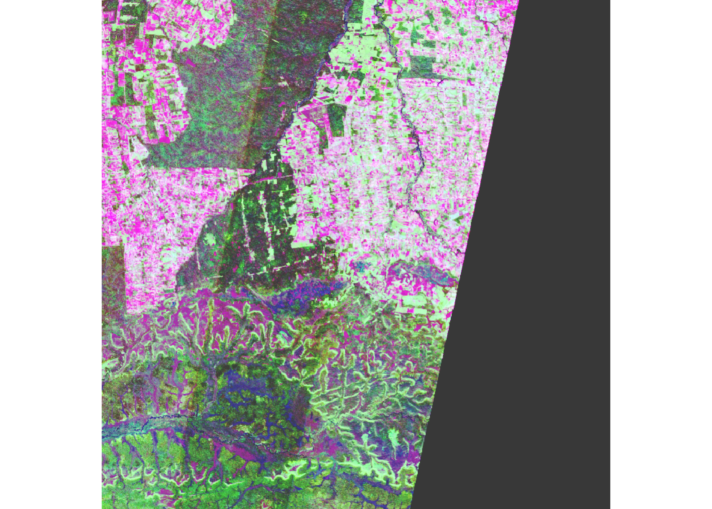

Chapter 2 Earth observation data cubes
This chapter describes how to use Earth observation data cubes in SITS.
Analysis-ready data image collections
Many large collections of Earth observation data are available in cloud computing services, that also provide computing facilities to process them. Investment in infrastructure is minimized, and sharing of data and software increases. Cloud services such as Amazon Web Service (AWS), Microsoft’s Planetary Computer (MSPC), and Digital Earth Africa (DEAfrica) provide access to collections of analysis-ready data (ARD). These collections which have been processed by space agencies to improve multidate comparability. Such processing includes conversion from radiance measures at the top of the atmosphere to reflectance measures from ground areas. Variations in sun incidence angles are also compensated. We define an ARD image collections as:
- An ARD image collection is a set of files from a given sensor (or a combined set of sensors) that has been corrected to ensure comparability of measurements between different dates.
- All images are reprojected to a cartographic projection following well-established standards.
- Image collections are cropped into a tiling system.
- In general, the timelines of the images that are part of one tile are not regular. Also, these timelines are not the same as those associated to a different tile.
- ARD image collections do not guarantee that every pixel of an image has a valid value, since its images still contains cloudy or missing pixels.
- The bands for the images in the collection may have different resolutions.
Figure 2.1 shows an example of the Landsat ARD image collection. The figure shows a collection of images that have been reprocessed to a standard tiling system. Because of the way remote sensing satellites acquire data over the Earth’s surface, there are missing values in most images. In ARD image collection, neighboring images have different timelines. ARD image collection are not regular data cubes; they need further processing to used directly in machine learning methods.

Figure 2.1: ARD image collection (source: USGS)
As of version 0.16, sits supports access to the following ARD image collections:
- AWS: Open data Sentinel-2/2A level 2A collections for the Earth’s land surface.
- Brazil Data Cube (BDC): Open data collections of Sentinel-2/2A, Landsat-8, CBERS-4/4A, and MODIS images for Brazil. These collections organized as regular data cubes.
- Digital Earth Africa (DEAFRICA): Open data collections of Sentinel-2/2A and Landsat-8 for Africa.
- Microsoft Planetary Computer (MSPC): Open data collections of Sentinel-2/2A and Landsat-8 for the Earth’s land areas.
- USGS: Landsat-4/5/7/8 collections for the whole Earth available in AWS, which require payment to access. Except for the USGS Landsat collection, users can access open data collections without payment. In the case of USGS, users should be registered in AWS and to pay for the cost of data access.
To better understand how ARD image collection are organized, one should consider their spatial partition. Sentinel-2/2A images are produced according to the MGRS tiling system. This system divides the world in 60 UTM zones of 8 degrees of longitude width. Each zone is divided in blocks of 6 degrees of latitude. Then, each block is split into tiles of 110 x 110 km2 with a 10 km overlap. As an example, Figure 2.3 shows the MGRS tiling system used in Sentinel-2 images for a part of the Northeastern coast of Brazil, contained in UTM zone 24, block M. The city of Fortaleza, shown in the centre of the image, is contained in MGRS tile 24MWA.

Figure 2.2: MGRS tiling system used by Sentinel-2 images (source: GISSurfer 2.0)
The Landsat 5/7/8/9 satellites use the Worldwide Reference System (WRS-2) to allow access to images by specifying a nominal scene center designated by path and row numbers. WRS-2 breaks the coverage of Landsat satellites into images identified by path and row. The path is the descending orbit of the satellite; the WRS-2 system has 233 paths per orbit and each path is divided in 119 rows. Images in WRS-2 are geometrically corrected to the UTM projection.

Figure 2.3: WRS-2 tiling system used by Landsat-5/7/8/9 images (source: INPE and ESRI)
Regular image data cubes
Machine learning and deep learning (ML/DL) classification algorithms require the input data to be consistent. The dimensionality of the data used for training the model has to be the same as that of the data to be classified. There should be no gaps in the input data and no missing values are allowed. Thus, to make best use of ML/DL algoritms for remote sensing data, it is strongly recommended that ARD image collections are converted to regular data cubes. Regular data cubes organize satellite data for a given area in a consistent spatiotemporal arrangement. Following [2], we consider that a regular data cube should meet the following definition:
- A regular data cube is a four-dimensional structure with dimensions x (longitude or easting), y (latitude or northing), time, and bands.
- Its spatial dimensions refer to a single spatial reference system (SRS). Cells of a data cube have a constant spatial size with respect to the cube’s SRS.
- The temporal dimension is composed of a set of continuous and equally-spaced intervals.
- For every combination of dimensions, a cell has a single value.
A regular data cube defines a well-constructed partition of space-time. All cells of a data cube have the same spatiotemporal extent. The spatial resolution of each cell is the same in X and Y dimensions. All temporal intervals are the same. Each cell contains a valid set of measures. For each position in space, the data cube should provide a valid time series. For each time interval, the regular data cube should provide a valid 2D image (see Figure 2.4).

Figure 2.4: Conceptual view of data cubes (source: authors)
Currently, the only cloud service that supports the above definition of data cubes is the Brazil Data Cube (BDC). Analysis-ready data (ARD) collections available in AWS, MSPC, USGS and DE Africa are not regular in space and time. Bands may have different resolutions, images may not cover the entire time, and time intervals are not regular. For this reason, subsets of these collections need to be converted to regular data cubes before further processing. To produce data cubes for machine-learning data analysis, users should first create an irregular data cube from an ARD collection and then use sits_regularize(), as described below.
Creating data cubes

To obtain information on ARD image collection, sits uses information provided by implementations of the STAC (SpatioTemporal Asset Catalogue) protocol. STAC is a specification of geospatial information which has been adopted by many large image collection providers. A ‘spatiotemporal asset’ is any file that represents information about the earth captured in a certain space and time. To access STAC endpoints, sits uses the rstac R package.
All access to image collections and data cubes is done using sits_cube(), which requires the following common parameters:
source: name of the provider from the list of providers suported bysits. See the next section for a description of the providers.collection: a collection available in the provider and supported bysits. See the next section to learn how to get information on collections.url: URL associated to the STAC endpoint of the provider. In most cases,sitshas information about the default endpoint, so this parameter can be omitted.tiles: Most satellites, when organised as analysis-ready data, conform to a reference system that divides Earth into granules or tiles. By specifying one or more tiles, the user selects a region of interest. in practice, eithertilesorroishould be specified.roi: a region of interest. Can be defined using: (a) a named vector (“lon_min”, “lon_max”, “lat_min”, “lat_max”) with lat/long values in WGS 84; (b) an sf object from the sf package, a data frame with feature attributes and feature geometries. When selecting images that compose a data cube based on aroi, sits does not crop them directly; the software selects the images that intersect with its convex hull.start_date: the initial date for the temporal interval containing the time series of images.end_date: the final date for the temporal interval containing the time series of images.
new_cube <- sits_cube(
# main parameters
source = <a provider supported by sits>,
collection = <a collection supported by the provider>,
url = <URL for the STAC endpoint of the data source>,
tiles = <one of more tiles in the collection reference system>,
roi = <region of interest>,
bands = <bands used for processing>,
start_date = <initial date for the temporal interval>,
end_date = <initial date for the temporal interval>
)The sits_cube() function produces a tibble with metadata about the images that satisfy the requirements stated in its parameters (spatiotemporal extent, resolution, and area of interest). It has the information required for further processing, but does not contain the actual data. In sits, the term “data cube” is used in a generic fashion, including both regular and irregular cubes. In what follows, we describe how to create data cubes using image collections in the various cloud services supported by sits. To find out which collections are supported by sits, use sits_list_collections().
Assessing Amazon Web Services
In AWS (Amazon Web Services), there are two types of collections: open-data and requester-pays. Open data collections can be accessed worldwide without cost. Requester-pays collections require payment associated to an AWS account. Users with access to AWS EC2 virtual machines may select requester-pays collection for efficiency reasons, specially if their machines are in the same geographical region as the collection. Currently, sits supports collections “SENTINEL-S2-L2A” (requester-pays) and “SENTINEL-S2-L2A-COGS” (open-data). Both collections support all Sentinel-2/2A bands. The bands in 10m resolution are “B02”, “B03”, “B04”, and “B08”. The 20m bands are “B05”, “B06”, “B07”, B8A”, “B8A”, “B11”, and “B12”. Bands “B01” and “B09” are available at 60m resolution.
The example below shows how to access one tile of the “SENTINEL-S2-L2A-COGS” collection. Such access does not require AWS credentials, since the collection is open data. The tiles parameter allows selection of desired area, according to the MGRS reference system.
# create a data cube covering an area in the Brazilian Amazon
# Sentinel-2 images over the Rondonia region
s2_20LKP_cube <- sits_cube(
source = "AWS",
collection = "SENTINEL-S2-L2A-COGS",
tiles = "20LKP",
start_date = "2018-07-12",
end_date = "2019-07-28",
bands = c("B04", "B08", "B11", "CLOUD")
)
# show part of the contents of the data cube tibble
print(dplyr::select(s2_20LKP_cube, tile, xmin, xmax, ymin, ymax, file_info))#> # A tibble: 1 × 6
#> tile xmin xmax ymin ymax file_info
#> <chr> <dbl> <dbl> <dbl> <dbl> <list>
#> 1 20LKP 199980 309780 8790220 8900020 <tibble [292 × 13]>The attributes of individual image files that are part of the data cube can be assessed by listing the file_info column of the tibble. This column contains a list that points to the file information tibble, which holds information on individual images, including date, band, resolution, bounding box, path and cloud cover. The path collumn contains the address of the file in the cloud server. As an example, the path vsicurl/https://sentinel-cogs.s3.us-west-2.amazonaws.com/sentinel-s2-l2a-cogs/20/L/KP/2018/7/S2A_20LKP_20180713_0_L2A/B04.tif enables sits to access a file stored in AWS in the collection sentinel-s2-l2a-cogs that contains band 4 of tile 20LKP of a Sentinel-2A image acquired in “2018-07-13” and reprocessed by ESA to the ARD format.
# show the first 3 images of the cube
# show basic information about each image
file_info <- s2_20LKP_cube$file_info[[1]]
print(dplyr::select(file_info[1:3,], date, band, xres, nrows, ncols, cloud_cover))#> # A tibble: 3 × 6
#> date band xres nrows ncols cloud_cover
#> <date> <chr> <dbl> <dbl> <dbl> <dbl>
#> 1 2018-07-13 B04 10 10980 10980 2.78
#> 2 2018-07-13 B08 10 10980 10980 2.78
#> 3 2018-07-13 B11 20 5490 5490 2.78Assessing Microsoft’s Planetary Computing
Microsoft’s Planetary Computing (MSPC) services hosts two open data collections: “SENTINEL-2-L2A” and “LANDSAT-8-C2-L2”. The first collection contains SENTINEL-2/2A ARD images. The bands in 10m resolution are “B02”, “B03”, “B04”, and “B08”. The 20m bands are “B05”, “B06”, “B07”, “B8A”, “B11”, and “B12”. Bands “B01” and “B09” are available at 60m resolution. A cloud band is also included. The example below shows how to access one tile of the “SENTINEL-S2-L2A” collection.
# create a data cube covering an area in the Brazilian Amazon
# Sentinel-2 images over the Rondonia region
s2_20LKP_cube_MSPC <- sits_cube(
source = "MSPC",
collection = "SENTINEL-2-L2A",
tiles = "20LKP",
start_date = "2019-07-01",
end_date = "2019-07-28",
bands = c("B05", "B8A", "B11", "CLOUD")
)
# show the timeline of the cube
sits_timeline(s2_20LKP_cube_MSPC)#> [1] "2019-07-03" "2019-07-08" "2019-07-13" "2019-07-18" "2019-07-23"# plot a colour composite of one date of the cube
plot(s2_20LKP_cube_MSPC, red = "B11", blue = "B05", green = "B8A", date = "2019-07-18")
Access to Landsat-8 (collection-2, level-2) images is done in a similar fashion in MSPC. The collection “LANDSAT-8-C2-L2” contains LANDSAT-8 ARD images with bands “B01”, “B02”, “B03”, “B04”, “B05”, “B06”, “B07” in 30m resolution. The selected tile is path 223, row 067 that covers part of the Brazilian Amazonia
# create a data cube covering an area in the Brazilian Amazon
# Sentinel-2 images over the Rondonia region
s2_L8_cube_MSPC <- sits_cube(
source = "MSPC",
collection = "LANDSAT-8-C2-L2",
tiles = "223067",
start_date = "2019-06-01",
end_date = "2019-10-01",
bands = c("B02", "B05", "B06", "CLOUD")
)
# show the timeline of the cube
sits_timeline(s2_L8_cube_MSPC)#> [1] "2019-06-10" "2019-06-26" "2019-07-12" "2019-07-28" "2019-08-13"
#> [6] "2019-08-29" "2019-09-14" "2019-09-30"# plot a colour composite of one date of the cube
plot(s2_L8_cube_MSPC, red = "B06", green = "B05", blue = "B02", date = "2019-07-28")
Assessing Digital Earth Africa
Digital Earth Africa (DEAFRICA) is a cloud service that provides open access Earth Observation data for the African continent. The ARD image collections available in sits are “S2_L2A” (Sentinel-2 level 2A) and LS8_SR (“LANDSAT-8/OLI”). There is a difference from the specification of data cubes using DEAFRICA data and those from other providers. The STAC interface for DEAFRICA does not implement the concept of tiles. Thus, users need to specify their area of interest using the roi parameter, either using a named vector (“lon_min”, “lat_min”, “lon_max”, “lat_max”) with values in WGS 84 or an sf object of type POLYGON.
dea_cube <- sits_cube(source = "DEAFRICA",
collection = "s2_l2a",
bands = c("B05", "B8A", "B11"),
roi = c(lon_min = 24.97,
lat_min = -34.30,
lon_max = 25.87,
lat_max = -32.63),
start_date = "2019-09-01",
end_date = "2019-10-01"
)
# show the contents of the cube
print(dplyr::select(dea_cube, tile, xmin, xmax, ymin, ymax))#> # A tibble: 3 × 5
#> tile xmin xmax ymin ymax
#> <chr> <dbl> <dbl> <dbl> <dbl>
#> 1 35HLD 300000 409800 6290200 6400000
#> 2 35HKD 199980 309780 6290200 6400000
#> 3 35HLC 300000 409800 6190240 6300040In this case, the requested roi has resulted in a cube that contains three MGRS tiles (“35HLD”, “35HKD”, and “35HLC”) covering part of South Africa. This data cube is not regular, as shown by executing sits_timeline(), where the result are three different timelines, one for each tile.
# show the timeline of the cube
sits_timeline(dea_cube)#> Warning in sits_timeline.raster_cube(dea_cube): Cube is not regular. Returning
#> all timelines#> $`35HLD`
#> [1] "2019-09-02" "2019-09-04" "2019-09-07" "2019-09-09" "2019-09-12"
#> [6] "2019-09-14" "2019-09-17" "2019-09-19" "2019-09-22" "2019-09-24"
#> [11] "2019-09-27" "2019-09-29"
#>
#> $`35HKD`
#> [1] "2019-09-02" "2019-09-07" "2019-09-12" "2019-09-17" "2019-09-22"
#> [6] "2019-09-27"
#>
#> $`35HLC`
#> [1] "2019-09-02" "2019-09-04" "2019-09-07" "2019-09-09" "2019-09-12"
#> [6] "2019-09-14" "2019-09-17" "2019-09-19" "2019-09-22" "2019-09-24"
#> [11] "2019-09-27" "2019-09-29"Despite the fact the cube is not regular, we can visualize its contents using plot().
dea_cube %>%
dplyr::filter(tile == "35HLC") %>%
plot(red = "B11", blue = "B05", green = "B8A", date = "2019-09-07")
Assessing the Brazil Data Cube
The Brazil Data Cube (BDC) is being built by Brazil’s National Institute for Space Research (INPE). Its goal is to create regular multidimensional data cubes for Brazil. The BDC uses three hierarchical grids based on the Albers Equal Area projection and SIRGAS 2000 datum. The three grids are generated taking -54 \(^\circ\) longitude as the central reference and defining tiles of \(6\times4\), \(3\times2\) and \(1.5\times1\) degrees. The large grid is composed by tiles of \(672\times440\) km2 and is used for CBERS-4 AWFI collections at 64 meter resolution; each CBERS-4 AWFI tile contains images of \(10,504\times6,865\) pixels. The medium grid is used for Landsat-8 OLI collections at 30 meter resolution; tiles have an extension of \(336\times220\) km2 and each image has \(11,204\times7,324\) pixels. The small grid covers \(168\times110\) km2 and is used for Sentinel-2 MSI collections at 10m resolutions; each image has \(16,806\times10,986\) pixels. The data cubes in the BDC are regularly spaced in time and cloud-corrected.

Figure 2.5: Hierarchical BDC tiling system showing overlayed on Brazilian Biomes (a), illustrating that one large tile (b) contains four medium tiles (c) and that medium tile contains four small tiles
The regular ARD image collections available in the BDC are: “LC8_30_16D_STK-1” (Landsat OLI, 30m resolution, 16-day intervals), “S2-SEN2COR_10_16D_STK-1” (Sentinel-2 MSI images with all bands interpolated to 10 meter resolution, 16-day intervals), “CB4_64_16D_STK-1” (CBERS 4/4A AWFI, 64m resolution, 16 days intervals), “CB4_20_1M_STK-1” (CBERS 4/4A MUX, 20m resoluton, one month intervals) and “MOD13Q1-6” (MODIS MOD13SQ1 product, collection 6, 250m resolution, 16-day intervals). For more details, use sits_list_collections(source = "BDC").
To access the Brazil Data Cube, users need to provide their credentials using environmental variables, as shown below. Obtaining a BDC access key is free. Users only need to register at the BDC site to obtain it.
Sys.setenv(
"BDC_ACCESS_KEY" = <your_bdc_access_key>
)In the example below, the data cube is defined as one tile (“022024”) of “CB4_64_16D_STK-1” collection which holds CBERS AWFI images at 16 days resolution.
# define a tile from the CBERS-4/4A AWFI collection
cbers_tile <- sits_cube(
source = "BDC",
collection = "CB4_64_16D_STK-1",
bands = c("B13", "B14", "B15", "B16", "CLOUD"),
tiles = "022024",
start_date = "2018-09-01",
end_date = "2019-08-28"
)
# plot one time instance
plot(cbers_tile, red = "B15", green = "B16", blue = "B13", date = "2018-09-30")
Defining a data cube using files
It is also possible to define data cubes using files that have been download from image collections and are available in a local computer. These files are not associated to a STAC endpoint that describes them. For this reason, they need to be be organized and named according to a pre-established convention to allow SITS to create a data cube from them. All files associated to a data cube should be in the same directory and have the same spatial resolution and projection. Each file should contain a single image band for a single date. Each file name needs to include date and band. Information on the tile reference system should be provided. Users need to provide information about the original source from with the data was downloaded, to allow sits to retrieve information about image attribues such as band names, missing values, etc. When working with local cubes, the following parameters should be provided to the sits_cube() function:
source: name of the original data provider (possible values are “BDC” (Brazil Data Cube), “AWS” (Amazon Web Services), USGS (USGS Landsat), “MS-PC” (Microsoft Planetary Computer) or “DEAFRICA” (Digital Earth Africa)). 2collection: name of the collection from where the data was extracted.data_dir: directory where images are located.bands: optional parameter to describe the bands to be retrieved.parse_info: information to parse the file names and extract the information on the tile, date and band associated with each individual file. It is assumed that file names contain image descriptors separated by a delimiter (usually “_“). For example,CBERS-4_AWFI_022024_B13_2018-02-02.tifandSENTINEL-2_MSI_L20KP_20m_B08_2021_03_29.jp2are valid file names for sits. Theparse_infoparameter is a list of strings indicating at which position the names oftile,dateandbandare to be found. In the two file names above, the parsing info is respectivelyc("X1", "X2", "tile", band", "date")andc("X1", "X2", "tile", "X3", "band", "date");delim: separator character between descriptors in the file name (default is “_“).
The following example shows how to define a data cube based on local files available as part of the sits package.
library(sits)
# Create a cube based on a stack of CBERS data
data_dir <- system.file("extdata/CBERS", package = "sitsdata")
# list the first three files
list.files(data_dir)[1:2]#> [1] "CB4_64_16D_STK_022024_2018-08-29_2018-09-13_EVI.tif"
#> [2] "CB4_64_16D_STK_022024_2018-08-29_2018-09-13_NDVI.tif"In this example, considering the file names, to retrieve information about the images, one needs to set the parse_info parameter to c("X1", "X2", "X3", "X4", "tile", "date", "X5", "band"). In this case, the first four parts of the file name are discarded, the fifth (“022024”) represents the tile, the sixth (“2018-08-29”) is the image acquisition date, and the seventh (“EVI” or “NDVI”) stands for the image band. The following code creates a local cube.
# files are named using the convention
# "CB4_64_16D_STK_022024_2018-08-29_2018-09-13_EVI.tif"
cbers_cube <- sits_cube(
source = "BDC",
collection = "CB4_64_16D_STK-1",
data_dir = data_dir,
delim = "_",
parse_info = c("X1", "X2", "X3", "X4", "tile", "date", "X5", "band")
)
# show the timeline of the cube
sits_timeline(cbers_cube)#> [1] "2018-08-29" "2018-09-14" "2018-09-30" "2018-10-16" "2018-11-01"
#> [6] "2018-11-17" "2018-12-03" "2018-12-19" "2019-01-01" "2019-01-17"
#> [11] "2019-02-02" "2019-02-18" "2019-03-06" "2019-03-22" "2019-04-07"
#> [16] "2019-04-23" "2019-05-09" "2019-05-25" "2019-06-10" "2019-06-26"
#> [21] "2019-07-12" "2019-07-28" "2019-08-13"# show the bands of the cube
sits_bands(cbers_cube)#> [1] "EVI" "NDVI"# plot the band NDVI in the first time instance
plot(cbers_cube, band = "NDVI", date = "2018-08-29")
It is also possible to create local cubes based on results that have been produced by classification or post-classification algorithms. In this case, there are more parameters that are required (see below) and the parameter parse_info is specified differently, as follows:
source: name of the original data provider (possible values are “BDC” (Brazil Data Cube), “AWS” (Amazon Web Services), USGS (USGS Landsat), “MS-PC” (Microsoft Planetary Computer) or “DEAFRICA” (Digital Earth Africa)).collection: name of the collection from where the data was extracted.data_dir: directory where the image data is located.band: Band name is associated to the type of result. Useprobsfor probability cubes produced bysits_classify();bayes,bilateral,gaussianaccording to the function selected when usingsits_smooth();entropywhen usingsits_uncertainty(),classfor cubes producedsits_label_classification. 5.labels: Labels associated to the classification results. 6.version: The version of the result (default = “v1”)parse_info: File name parsing information has to allowsitsto deduce the values of “tile”, “start_date”, “end_date”, “band” and “version” from the file name. Default is \code{c(“X1”, “X2”, “tile”, “start_date”, “end_date”, “band”, “version”). Note that, unlike non-classified image files, cubes with results have both “start_date” and “end_date”.
The following code creates a results cube based on the classification of deforestation in Brazil, a study that is described in more detail in our “Case Studies” chapter. This classified cube was obtained by a large data cube of Sentinel-2 images, covering the state of Rondonia, Brazil comprising 40 tiles, 10 spectral bands, and covering the period from 2020-06-01 to 2021-09-11. Samples of four classes were trained by a random forest classifier.
library(sits)
library(sitsdata)
# Create a cube based on a stack of CBERS data
data_dir <- system.file("extdata/Rondonia", package = "sitsdata")
# list the first three files
list.files(data_dir)#> [1] "SENTINEL-2_MSI_20LLP_2020-06-04_2021-08-26_class_v1.tif"The directory has four files. We are interested in building a data cube for the classification result. That is achieved by the code below.
# files are named using the convention
# "SENTINEL-2_MSI_20LLP_2020-06-04_2021-08-26_class_v1.tif"
Rondonia_class_cube <- sits_cube(
source = "AWS",
collection = "SENTINEL-S2-L2A-COGS",
data_dir = data_dir,
bands = "class",
labels = c("Burned_Area", "Cleared_Area", "Highly_Degraded", "Forest"),
delim = "_",
parse_info = c("X1", "X2", "tile", "start_date", "end_date", "band", "version")
)
# plot the classified cube
plot(Rondonia_class_cube, legend = c("Burned_Area" = "firebrick4",
"Cleared_Area" = "khaki3",
"Highly_Degraded" = "orange3",
"Forest" = "forestgreen"))
Regularizing data cubes
Analysis-ready data (ARD) collections available in AWS, MSPC, USGS and DE Africa are not regular in space and time. Bands may have different resolutions, images may not cover the entire time, and time intervals are not regular. For this reason, subsets of these collection need to be converted to regular data cubes before further processing and data analysis. This is done in sits by the function sits_regularize(), which relies on the package gdalcubes [2]. For details in gdalcubes, please see https://github.com/appelmar/gdalcubes.
In the following example, the user has created an irregular data cube from the Sentinel-2 collection available in Microsoft’s Planetary Computer (MSPC) for tiles “20LKP and”20LLP” in the state of Rondonia, Brazil. As described earlier in this chapter, because of the way ARD image collections are built, some of the images have invalid pixels, as shown below. We first build an irregular data cube using sits_cube().
# creating an irregular data cube in MSPC
s2_cube <- sits_cube(
source = "MSPC",
collection = "SENTINEL-2-L2A",
tiles = c("20LKP", "20LLP"),
start_date = as.Date("2018-07-01"),
end_date = as.Date("2018-08-31"),
bands = c("B11", "CLOUD")
)Because of different acquisition orbits of the Sentinel-2 and Sentinel-2A satellites, the two tiles also have different timelines.
After building the cube, we can plot the first image, which only covers part of the tile.
# plot the first image of the irregular cube
s2_cube %>%
dplyr::filter(tile == "20LLP") %>%
plot(band = "B11", time = 1)
# select tile "20LKP" of the irregular cube and show its timeline
s2_cube %>%
dplyr::filter(tile == "20LKP") %>%
sits_timeline()#> [1] "2018-07-03" "2018-07-08" "2018-07-13" "2018-07-18" "2018-07-23"
#> [6] "2018-07-28" "2018-08-02" "2018-08-07" "2018-08-12" "2018-08-17"
#> [11] "2018-08-22" "2018-08-27"Because of different acquisition orbits of the Sentinel-2 and Sentinel-2A satellites, the two tiles also have different timelines. Tile “20LKP” has 12 instances.
Tile “20LLP” has 24 instances.
# select tile "20LLP" of the irregular cube and show its timeline
s2_cube %>%
dplyr::filter(tile == "20LLP") %>%
sits_timeline()#> [1] "2018-07-03" "2018-07-05" "2018-07-08" "2018-07-10" "2018-07-13"
#> [6] "2018-07-15" "2018-07-18" "2018-07-20" "2018-07-23" "2018-07-25"
#> [11] "2018-07-28" "2018-07-30" "2018-08-02" "2018-08-04" "2018-08-07"
#> [16] "2018-08-09" "2018-08-12" "2018-08-14" "2018-08-17" "2018-08-19"
#> [21] "2018-08-22" "2018-08-24" "2018-08-27" "2018-08-29"To transform irregular cubes into regular ones, the package provides the function
sits_regularize(). It builds a data cube with a regular timeline and with a best estimate of a valid pixel for each period. In this function, the period parameter controls the temporal interval between two images. Values should abide by the ISO8601 time period specification, which states that time interval should be defined as “P[n]Y[n]M[n]D”, where Y stands for “years”, “M” for months and “D” for days. Thus, “P1M” stands for a one-month period, “P15D” for a fifteen-day period.
When joining different images to get the best image for a period, sits_regularize() uses an aggregation method which organizes the images for the chosen interval in order of increasing cloud cover, and selects the first cloud-free pixel in the sequence. For more details, see ?sits_regularize().
# regularize the cube to one month intervals
reg_cube <- sits_regularize(
cube = s2_cube,
output_dir = "./tempdir/chp4",
res = 120,
period = "P15D",
multicores = 4,
memsize = 16
)The pixels of the regular data cube cover the full MGRS tile, as shown below.
# plot the first image of the irregular cube
reg_cube %>%
dplyr::filter(tile == "20LLP") %>%
plot(band = "B11", time = 1)
All pixels of the regular data cube have the same timeline.
# select tile "20LKP" of the irregular cube and show its timeline
reg_cube %>%
dplyr::filter(tile == "20LKP") %>%
sits_timeline()#> [1] "2018-07-03" "2018-07-18" "2018-08-02" "2018-08-17"# select tile "20LLP" of the irregular cube and show its timeline
reg_cube %>%
dplyr::filter(tile == "20LLP") %>%
sits_timeline()#> [1] "2018-07-03" "2018-07-18" "2018-08-02" "2018-08-17"We recommend that all data analysis using sits is done using regular data cubes. Therefore, after selecting an ARD image collection from a cloud service with sits_cube(), users should use the sits_regularize() function. The case of the Brazil Data Cube is an exception, since collections in the BDC recognised by SITS are regular.